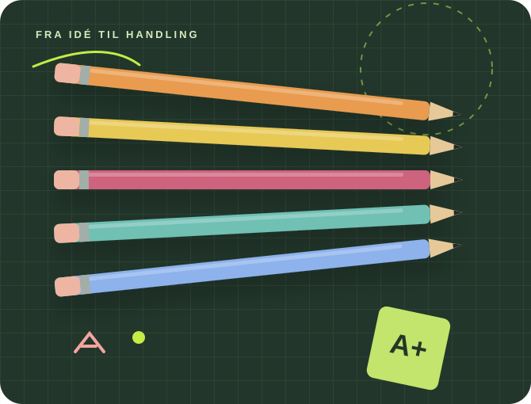

Gode idéer skal kunne mærkes.
Jeg udvikler læring, mennesker og organisationer. Med faglighed, nysgerrighed og et skarpt blik for det, der faktisk kan lade sig gøre i praksis.

Fra viden til forandring.
Udvikling skal ikke kun se godt ud på papir.
Den skal fungere mandag morgen, når mennesker mødes om en reel opgave.
Jeg arbejder i feltet mellem faglighed, mennesker og forandring. Nogle gange betyder det at udvikle nye undervisningsforløb. Andre gange at samle et team, facilitere et kursus eller gøre en idé til noget, andre kan tage i brug.
Forstå
Hvad er behovet – og hvem skal det virke for?
Udvikle
Skabe løsninger sammen med dem, der skal bruge dem.
Forankre
Omsætte indsigt til konkrete handlinger og fælles praksis.
Fire felter.
Én fælles retning.
Jeg forbinder udvikling og formidling med den ledelsesmæssige og didaktiske erfaring, der får arbejdet helt i mål.
Faglig ledelse & udvikling
Fælles retning, stærke teams og udviklingsprocesser, der får mennesker med.
Kompetenceudvikling & facilitering
Kurser, workshops og forløb, hvor deltagerne arbejder med deres egen praksis.
Teknologiforståelse & AI
Erfaring fra valghold i iværksætteri og teknologiforståelse omsat til skabende læring og digital handlekraft.
Læringsdesign & formidling
Fagligt indhold og oplevelser, der engagerer, undersøger og bliver husket.
Det er i arbejdet,
det bliver tydeligt.
Et udsnit af projekter fra mine roller som konsulent, fagredaktør, lærer og frivillig leder.
Fra kursus til egen praksis
Forløb for lærere, ledere og it-ansvarlige i Odense, Syddjurs, Vesthimmerland og Favrskov.
Faglig kvalitet i fælles produktion
Rekruttering og ledelse af 11 forløbsbyggere, redaktionel retning og kvalitetssikring.
Følgeskab på tværs af grænser
Instruktørudvikling, kulturmøder og større internationale træningsarrangementer.
Det at eleverne ikke bare er forbrugere af medier og teknologi, men selv bliver producenter, det er nok det vigtigste.
Thorbjørn Hartelius · fra IRIS’ udviklingsrapport ↗
En god idé begynder med en samtale.
Fortæl mig, hvad I står med. Jeg hjælper gerne med at finde den rigtige vej fra udfordring til praksis.